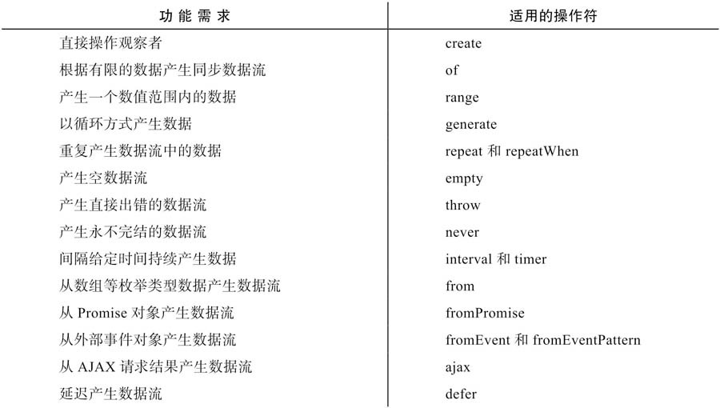

深入浅出RxJS
一、函数式编程
声明式
和声明式相对应的编程方式叫做命令式编程（Imperative Programming），命令式编程也是最常见的一种编程方式。
纯函数（pure Function）
❑ 函数的执行过程完全由输入参数决定，不会受除参数之外的任何数据影响。
❑ 函数不会修改任何外部状态，比如修改全局变量或传入的参数对象。
不纯函数（Impure Function）
❑ 改变全局变量的值。
❑ 改变输入参数引用的对象，就像上面不是纯函数的arrayPush实现。
❑ 读取用户输入，比如调用了alert或者confirm函数。
❑ 抛出一个异常。
❑ 网络输入/输出操作，比如通过AJAX调用一个服务器的API。
❑ 操作浏览器的DOM。
数据不可变
二、响应式编程
❑ 数据流抽象了很多现实问题。
❑ 擅长处理异步操作。
❑ 把复杂问题分解成简单问题的组合。
RxJS擅长处理异步操作，因为它对数据采用“推”的处理方式，当一个数据产生的时候，被推送给对应的处理函数，这个处理函数不用关心数据是同步产生的还是异步产生的，这样就把开发者从命令式异步处理的枷锁中解放了出来。
三、Observable和Observer
观察者模式
❑ 如何产生事件，这是发布者的责任，在RxJS中是Observable对象的工作。
❑ 如何响应事件，这是观察者的责任，在RxJS中由subscribe的参数来决定。
❑ 什么样的发布者关联什么样的观察者，也就是何时调用subscribe。
迭代器模式
通常所说的是“拉”式的迭代器实现，而RxJS实现的是“推”式的迭代器实现。
Observable = Publisher+Iterator
Observable产生的事件，只有Observer通过subscribe订阅之后才会收到，在unsubscribe之后就不会再收到。
四、Hot Observable和Cold Observable
❑ 选择A：错过就错过了，只需要接受从订阅那一刻开始Observable产生的数据就行。 Hot Observable
❑ 选择B：不能错过，需要获取Observable之前产生的数据。 Cold Observable
五、操作符-operator
❑ filter和map都是Observable对象的成员函数。
❑ filter和map的返回结果依然是Observable对象。
❑ filter和map不会改变原本的Observable对象。
分类
❑ 创建类（creation）❑ 转化类（transformation）❑ 过滤类（filtering）❑ 合并类（combination）❑ 多播类（multicasting）❑ 错误处理类（error Handling）❑ 辅助工具类（utility）❑ 条件分支类（conditional & boolean）❑ 数学和合计类（mathmatical & aggregate）
无论是静态操作符还是实例操作符，它们都会返回一个Observable对象。在链式调用中，静态操作符（of）只能出现在首位，实例操作符则(map)可以出现在任何位置，因为链式调用中各级之间靠Observable对象来关联，一个静态函数在链式调用的中间位置是不可能有容身之处的。
一个操作符应该是静态的形式还是实例的形式，完全由其功能决定。例如：merge支持两种形式
操作符函数的实现
每个操作符都是一个函数，不管实现什么功能，都必须考虑下面这些功能要点：
❑ 返回一个全新的Observable对象。
❑ 对上游和下游的订阅及退订处理。
❑ 处理异常情况。
❑ 及时释放资源。
lettable和pipeable
❑ 静态类型操作符没有pipeable操作符的对应形式。
❑ 拥有多个上游Observable对象的操作符没有pipeable操作符的对应形式。
1 | import {of} from 'rxjs/observable/of'; |
任何Observable对象都支持pipe
pipe不只是具备let的功能，还有“管道”功能，可以把多个lettable操作符串接起来，形成数据管道。
lettable操作符和pipeable操作符是同一种东西在不同阶段的称呼而已。
❑ do改为tap❑ catch改为catchError❑ switch改为switchAll❑ finally改为finalize
六、创建数据流
在RxJS的世界中，一切都以数据流为中心，在代码中，数据流以Observable类的实例对象形式存在，创建Observable对象就是数据流处理的开始。

❑ 产生哪些数据。
❑ 数据之间的先后顺序如何。
create
1 | Observable.create = function (subscribe) { |
fromEventPattern
感觉你叫适用websocket场景
fromEventPattern提供的就是一种模式，不管数据源是怎样的行为，最后的产出都是一个Observable对象，对一个Observable对象交互的两个重要操作就是subscribe和unsubscribe，所以，fromEventPattern设计为这样，当Observable对象被subscribe时第一个函数参数被调用，被unsubscribe时第二个函数参数被调用。在上面的例子中，两个函数参数分别为addHandler和removeHandler。
1 | import {Observable} from 'rxjs/Observable'; |
七、合并数据流

concat
- concat适用于同步事件
merge
- 应该避免用merge去合并同步数据流，merge应该用于合并产生异步数据的Observable对象，一个常用场景就是合并DOM事件。
- merge第二个参数concurrent，同步限流
- 我们用fromEvent分别获得给定DOM元素的click和touchend事件数据流，然后用merge合并，这之后，无论是click事件发生还是touchend事件发生，都会流到merge产生的Observable对象中，这样就可以统一用一个事件处理函数eventHandler来处理。
1 | const click$ = Rx.Observable.fromEvent(element, 'click'); |
zip拉链式组合（一一对应）
1 | // 输出 |
- 数据积压问题
combineLatest：合并最后一个数据

1 | const source1$ = Observable.of('a', 'b', 'c'); |
没错！实际上只有最后一个参数source3$的所有数据进入了combineLatest的下游，排在前面的source1$和source2$都只有最后一个数据有幸进入下游，最终下游Observable对象的数据个数也是由source3$决定。归根结底，是因为source1$和source2$被订阅得早，它们吐出最后一个数据之前combineLatest都凑不齐所有参与Observable对象的“最新数据”。
定制下游数据
combineLatest的最后一个参数可以是一个函数，这里我们称之为project, project的作用是让combineLatest把所有上游的“最新数据”扔给下游之前做一下组合处理，这样就可以不用传递一个数组下去，可以传递任何由“最新数据”产生的对象。project可以包含多个参数，每一个参数对应的是上游Observable的最新数据，project返回的结果就是combineLatest塞给下游的结果。
1
2
3
4
5
6
7
8
9
10
11
12
13
14
15
16const source1$ = Observable.timer(500, 1000);
const source2$ = Observable.timer(1000, 1000);
const project = (a, b) => `${a} and ${b}`;
const result$ = source1$.combineLatest(source2$, project);
//0 and 0
//1 and 0
//1 and 1
//2 and 1
// 等同于
const source1$ = Observable.timer(500, 1000);
const source2$ = Observable.timer(1000, 1000);
const project = (a, b) => `${a} and ${b}`;
const result$ = source1$.combineLatest(source2$)
.map(arr => project(...arr));
zip和combineLatest一样默认输出的数据是数组形式，因此，zip也和combineLatest一样，可以利用最后一个函数参数来订制输出数据的形式。
多重依赖问题，一个小缺陷
1
2
3
4
5
6
7
8
9
10
11
12
13import { timer, Observable, combineLatest } from 'rxjs';
import { map } from 'rxjs/operators';
const original$ = timer(0, 1000);
const source1$ = original$.pipe(map(x => x+'a'));
const source2$ = original$.pipe(map(x => x+'b'));
const result$ = combineLatest(source1$, source2$);
result$.subscribe(
console.log,
null,
() => console.log('complete')
);


combineLatest的glitch现象
withLatestFrom
withLatestFrom的功能类似于combineLatest，但是给下游推送数据只能由一个上游Observable对象驱动。
withLatestFrom只有实例操作符的形式，而且所有输入Observable的地位并不相同，调用withLatestFrom的那个Observable对象起到主导数据产生节奏的作用，作为参数的Observable对象只能贡献数据，不能控制产生数据的时机。
实例代码
1
2
3
4
5
6
7
8
9
10
11
12
13
14import {Observable} from 'rxjs/Observable';
import 'rxjs/add/observable/timer';
import 'rxjs/add/operator/withLatestFrom';
import 'rxjs/add/operator/map';
const source1$ = Observable.timer(0, 2000).map(x => 100 ＊ x);
const source2$ = Observable.timer(500, 1000);
const result$ = source1$.withLatestFrom(source2$, (a, b)=> a+b);
result$.subscribe(
console.log,
null,
() => console.log('complete')
);产生下游数据流result$中数据的步骤如下：
1）在第0毫秒时刻，source1$吐出数据100, source2$没有吐出数据，所以没有给下游产生数据。2）在第500毫秒时刻，source2$吐出数据0，但是source2$并不直接触发给下游传递数据，所以依然没有给下游产生产生数据。
3）在第1500毫秒时刻，source2$吐出数据1，同样不会给下游产生数据。
4）在第2000毫秒时刻，source1$吐出数据100，这个数据会加上source2$吐出的最后一个数据1，产生传给下游的数据101。
5）在第2500毫秒时刻，source2$吐出数据2，不会给下游产生数据。
6）在第3500毫秒时刻，source2$吐出数据3，不会给下游产生数据。
7）在第4000毫秒时刻，source1$吐出数据200，这个数据加上source2$吐出的最后一个数据3，产生传给下游的的数据203。

解决glitch
1
2
3
4
5
6
7
8
9
10
11
12
13
14
15
16
17
18
19import {Observable} from 'rxjs/Observable';
import 'rxjs/add/observable/timer';
import 'rxjs/add/operator/withLatestFrom';
import 'rxjs/add/operator/map';
const original$ = Observable.timer(0, 1000);
const source1$ = original$.map(x => x+'a');
const source2$ = original$.map(x => x+'b');
const result$ = source1$.withLatestFrom(source2$);
result$.subscribe(
console.log,
null,
() => console.log('complete')
);
//[ '0a', '0b' ]
//[ '1a', '1b' ]
//[ '2a', '2b' ]
//[ '3a', '3b' ]
一般来说，当要合并多个Observable的“最新数据”，要从combineLatest和withLatest-From中选一个操作符来操作，根据下面的原则来选择：
❑ 如果要合并完全独立的Observable对象，使用combineLatest。
❑ 如何要把一个Observable对象“映射”成新的数据流，同时要从其他Observable对象获取“最新数据”，就是用withLatestFrom。
combineLatest会为输入Observable对象的每个next动作产生一个数据，很多情况下这是最理想的一种方式，但是，如果输入Observable对象之间有依赖关系，就会发生多个输入Observable对象同时产生数据的情况，这就是glitch现象。glitch现象虽然存在，但是并不一定会造成bug，比如，在网页应用中，用combineLatest来合并用户操作事件产生的数据流，就可能发生glitch现象，但是从用户感知角度，可能完全注意不到。
race胜者通吃

startWith
startWith只有实例操作符的形式，其功能是让一个Observable对象在被订阅的时候，总是先吐出指定的若干个数据
startWith满足了需要连续链式调用的要求，像下面这样：
1 | original$.map(x => x ＊ 2).startWith('start').map(x => x + 'ok'); |
forkJoin
forkJoin只有静态操作符的形式，可以接受多个Observable对象作为参数，forkJoin产生的Observable对象也很有特点，它只会产生一个数据，因为它会等待所有参数Observable对象的最后一个数据，也就是说，只有当所有Observable对象都完结，确定不会有新的数据产生的时候，forkJoin就会把所有输入Observable对象产生的最后一个数据合并成给下游唯一的数据。
所以说，forkJoin就是RxJS界的Promise.all, Promise.all等待所有输入的Promise对象成功之后把结果合并，forkJoin等待所有输入的Observable对象完结之后把最后一个数据合并。
八、高阶Observable
用Observable来管理多个Observable对象
数据流虽然管理的是数据，数据流自身也可以认为是一种数据，既然数据可以用Observable来管理，那么数据流本身也可以用Observable来管理，让需要被管理的Observable对象成为其他Observable对象的数据，用现成的管理Observable对象的方法来管理Observable对象，这就是高阶Observable的意义。
1 | const ho$ = Observable.interval(1000) |
❑ concatAll
1
2
3
4const ho$ = Observable.interval(1000)
.take(2)
.map(x => Observable.interval(1500).map(y => x+':'+y).take(2));
const concated$ = ho$.concatAll();
❑ mergeAll
1
2
3
4const ho$ = Observable.interval(1000)
.take(2)
.map(x => Observable.interval(1500).map(y => x+':'+y).take(2));
const concated$ = ho$.mergeAll();
❑ zipAll
1
2
3
4
5
6
7const ho$ = Observable.interval(1000)
.take(2)
.map(x => Observable.interval(1500).map(y => x+':'+y).take(2));
const concated$ = ho$.zipAll();
//[ '0:0', '1:0' ]
//[ '0:1', '1:1' ]
//complete❑ combineAll（这个是个例外，因为combineLatestAll显得有点啰嗦）
combineAll就是处理高阶Observable的combineLatest
1
2
3
4
5
6
7
8
9const ho$ = Observable.interval(1000)
.take(2)
.map(x => Observable.interval(1500).map(y => x+':'+y).take(2));
const concated$ = ho$.combineAll();
//[ '0:0', '1:0' ]
//[ '0:1', '1:0' ]
//[ '0:1', '1:1' ]
//complete❑ switch：切换输入Observable

❑ exhaust(exhaust的含义就是“耗尽”，这个操作符的意思是，在耗尽当前内部Observable的数据之前不会切换到下一个内部Observable对象。)

本章介绍了RxJS中合并多个Observable对象的方法。不同合并方法的区别在于用何种策略把上游多个Observable对象中数据转手给下游，例如，concat的策略是让上游Observable对象的数据依次首尾相连，merge是任何数据先来先进入下游，zip则要保证所有上游Observable对象公平，数据要一一对应。本章涉及了combineLatest的glitch问题，但是这个问题可以通过使用withLatest-From克服。产生的数据依然是Observable对象的Observable，称为高阶Observable, RxJS提供了合并高阶Observable对象中数据的操作符，实际上只是把多个Observable对象参数改成了一个高阶Observable对象
九、辅助类操作符

数学类操作符
这些操作符必定会遍历上游Observable对象中吐出的所有数据才给下游传递数据，也就是说，它们只有在上游完结的时候，才给下游传递唯一数据。
❑ count
❑ max
❑ min
❑ reduce
条件布尔类操作符
❑ every
❑ find
❑ findIndex
❑ defaultIfEmpty
十、过滤数据流

回压控制

回压这种现象的根源是数据管道中某个环节数据涌入的速度超过了处理速度，那么，既然处理不过来，干脆就舍弃掉一些涌入的数据，这种方式称为“有损回压控制”（Lossy BackpressureControl），通过损失掉一些数据让流入和处理的速度平衡，剩下来的问题就是决定舍弃掉哪些数据？
回压控制操作符包含以下这些：
❑ throttle
当source$产生第一个数据0的时候，throttle就和throttleTime一样，毫不犹豫地把这个数据0传给了下游，在此之前会用这个数据0作为参数调用durationSelector，然后订阅durationSelector返回的Observable对象，在这个Observable对象产生第一个对象之前，所有上游传过来的数据都会被丢弃，于是，source$产生的数据1就被丢弃了，因为durationSelector返回的Observable对象被订阅之后2000毫秒才会产生数据。
1
2
3const durationSelector = value => {
return Observable.timer(value % 3 === 0 ? 2000 : 1000);
};
❑ debounce
❑ audit
❑ sample
1
2
3
4
5
6
7const notifer$ = Rx.Observable.fromEvent(document.querySelector('#sample'),
'click');
const tick$ = Rx.Observable.timer(0, 10).map(x => x＊10);
const sample$ = tick$.sample(notifer$);
sample$.subscribe(value => {
document.querySelector('#text').innerText = value
});tick$产生的数据经过sample过滤，并不会全部都被下游接收到，只有当参数notifer$产生一个数据的时候，sample就会从上次产生数据到现在的时间段里提取最后一个数据传给下游，这个数据肯定就是订阅以来逝去的毫秒数。
还有对应上面四个操作符的带Time后缀的简化版操作符：
❑ throttleTime
使用throttleTime和debounceTime的一个常见场景就是用来减少不必要的DOM事件处理。例如，在购物类网站中，用户当然可以通过多次点击“添加到购物车”来购买多个同一商品，但是为了防止用户点击过快，可以限定一秒钟之内最多添加一次商品，这时候就用得上throttleTime，

❑ debounceTime
❑ auditTime
❑ sampleTime
sample的含义就是“采样”，从字面上就看得出来，sample是要根据规则在一个范围内取一个数据，抛弃其他数据。

7.2.1 throttle和debounce在实际应用中，经常需要限制某种事情发生的次数，下面是一些具体例子：❑ 鼠标移动事件的处理函数。❑ 屏幕滚动事件的处理函数。❑ 渲染网页的函数。❑ 数据管道中处理数据的函数。
throttleTime与auditTime:
audit翻译过来的意思是“审计”或者“查账”，从字面上看不出它的具体含义。但实际上，可以认为audit是做throttle类似的工作，不同的是在“节流时间”范围内，throttle把第一个数据传给下游，audit是把最后一个数据传给下游。

根据数据序列做回压控制
上游的数据序列是0、0、1、1、1、1、2、2、2、2，某些场景下，我们只需要处理0、1、2分别一次就行，当某个数据连续出现的时候，我们没必要处理，而且这种数据序列的出现和时间又没有关系，所以前面介绍的回压控制操作符都帮不上忙，这时候就需要用上名字里包含distinct的操作符了。
❑ distinct(数据去重)
1
2
3
4
5
6
7
8
9
10
11
12import {Observable} from 'rxjs/Observable';
import 'rxjs/add/observable/of';
import 'rxjs/add/operator/distinct';
const source$ = Observable.of(0, 1, 1, 2, 0, 0, 1, 3, 3);
const distinct$ = source$.distinct();
distinct$.subscribe(
console.log,
null,
() => console.log('complete')
);distinct还有一个潜在的问题需要注意，如果上游产生的不同数据很多，那么可能会造成内存泄露。可以想象一下distinct的实现方式，它肯定先订阅上游的Observable对象，然后自己维护一个“唯一数据集合”记录上游推送下来的所有唯一的数据，每当上游产生一个数据，distinct就查看一下这个数据是否在“唯一数据集合”中，如果存在，那就直接舍弃掉；如果不存在，就把这个数据添加到“唯一数据集合”中，然后把这个数据传给下游。这样一种实现方式下，如果上游不同的数据有多少，那么distinct需要维护的“唯一数据集合”也就有多大，如果上游Observable对象不同的数据很多而且总不完结，那么distinct就要持续维持庞大的数据集合，这就会造成不必要的数据压力。为了克服这个缺点，distinct还提供第二个可选的参数flush，第二个参数可以是一个Observable对象，每当这个Observable对象产生数据时，distinct就清空“唯一数据集合”，一切重来，这样就避免了内存泄露。
1
2const source$ = Observable.interval(100).map(x => x % 1000);
const distinct$ = source$.distinct(null, Observable.interval(500));source$中会产生1000个唯一的数据，distinct的第二个参数每500毫秒就会产生一个数据，这个数据是什么值不重要，重要的是它会清空distinct以前积压的所有唯一数据。使用了distinct的第二个参数，distinct表现出来的行为就会和以前不一样，传递给下游的数据并不是在整个上游所有数据中唯一的，而只是在一段时间范围内是唯一的，是否使用这个参数要根据实际应用需求来判断。
❑ distinctUntilChanged
也是淘汰掉重复的数据，但distinct-UntilChanged拿到一个数据不是和一个“唯一数据集合”比较，而是直接和上一个数据比较，也就是说，这个操作符要保存上游产生的上一个数据就足够，当然，也就没有了distinct潜在的内
❑ distinctUntilKeyChanged
1
2
3
4
5
6
7const source$ = Observable.of(
{name: 'RxJS', version: 'v4'},
{name: 'React', version: 'v15'},
{name: 'React', version: 'v16'},
{name: 'RxJS', version: 'v5'}
);
const distinct$ = source$.distinctUntilKeyChanged('name');
其他过滤方式
❑ ignoreElement
ignoreElments就是要忽略所有的元素，这里的元素是指上游产生的数据，忽略所有上游数据，只关心complete和error事件。下面是使用ignoreElements的示例代码：
❑ elementAt
elementAt把上游数据当数组，只获取指定下标的那一个数据，就这个简单功能，使用first配合函数参数也一样能够实现。不过elementAt还有一个附加功能体现了自己的存在价值，它的第二个参数可以指定没有对应下标数据时的默认值。
❑ single
elementAt把上游数据当数组，只获取指定下标的那一个数据，就这个简单功能，使用first配合函数参数也一样能够实现。不过elementAt还有一个附加功能体现了自己的存在价值，它的第二个参数可以指定没有对应下标数据时的默认值。
本章介绍RxJS中过滤数据的方法，在数据管道中，对数据很重要的一部分操作就是把不相关的数据清理掉，这就是过滤类操作符的工作。在数据管道中，当数据产生的速度过快，超过下游处理能力时，就会产生回压现象。数据过滤是进行回压控制的最简单方法，通过抛弃一些数据来缓解压力。但是具体抛弃哪些数据，需要根据不同应用场景来决定使用什么样的过滤类操作符。
十一、转化数据流
transformation 操作符

对数据的转化可以分为两种：
❑ 对每个数据做转化。上游的数据和下游的数据依然是一对一的关系，只不过传给下游的数据已经是另一个数据，比如上游传下来的是数据A，传给下游的是数据f（A），其中f是一个函数，以A为输入返回一个新的数据，下节介绍的“映射数据”就是这一种方法。
❑ 不转化单个数据，而是把数据重新组合。比如上游传下来的是A、B、C三个数据，传给下游的是一个数组数据[A, B, C]，并没有改变上游数据本身，只是把它们都塞到了一个数组对象中传给下游。本章后面介绍的无损回压控制操作符就是这种转化方式。
映射数据(有损，舍弃掉一些数据)
map
mapFunc这个函数是map的第一个参数，充当project的功能，同时，map还有第二个参数context对象，如果用上这个参数，那么mapFunc在每次执行的时候，this就是map的这个参数context，所以，在mapFunc中this.separator的值就是冒号（:）。
1
2
3
4
5
6
7
8
9
10
11
12
13
14
15import {Observable} from 'rxjs/Observable';
import 'rxjs/add/observable/of';
import 'rxjs/add/operator/map';
const source$ = Observable.of(3, 1, 4);
const mapFunc = function(value, index) {
return `${value} ${this.separator} ${index}`;
};
const context = {separator: ':'};
const result$ = source$.map(mapFunc, context);
result$.subscribe(
console.log,
null,
() => console.log('complete')
);这是map的一个小的功能细节，但是，并不建议使用，因为按照函数式编程的原则，应该尽量让函数成为纯函数，如果一个函数的执行依赖于this，那么就难以预料这个函数的执行结果，并不是什么好事。所以，虽然我们知道map有这个功能，但要尽量避免使用它。
1
2
3
4
5
6
7
8const source$ = Observable.of(3, 1, 4);
const context = {separator: ':'};
const mapFunc = (function (separator) {
return function(value, index) {
return `${value} ${separator} ${index}`;
};
})(context.separator)
const result$ = source$.map(mapFunc);mapTo
pluck
缓存窗口：无损回压控制
将上游数据放在数组中传给下游的操作符都包含buffer这个词:
❑ bufferTime
❑ bufferCount
❑ bufferWhen
❑ bufferToggle
❑ buffer
此外，将上游数据放在Observable中传给下游的操作符都包含window这个词，包括：
❑ windowTime
❑ windowCount
❑ windowWhen
❑ windowToggle
❑ window
windowTime和bufferTime

windowCount和bufferCount

windowWhen和bufferWhen
closingSelector之所以没有参数，是因为调用closingSelector的时机和上游数据的产生没有任何关系，windowWhen并不是在上游产生数据的时候调用closingSelector，而是在被订阅的那个时刻或者缓冲区间结束时就调用closingSelector。因为closingSelector没有参数，所以，这种灵活性其实并不容易真正实现。如果让closingSelector是纯函数，因为没有参数，就只能通过访问外部变量来获得变化因素，这显然违背函数式编程的原则；或者，保持closingSelector为纯函数，但是返回一个数据源在外部的Observable对象，下面是一个例子：
1 | const closingSelector = () => { |
其中的closingSelector依然是一个纯函数，但是返回的Observable对象中的数据却是可以变化，以此实现了灵活的控制，但是这种灵活本身并不好应用，所以，windowWhen和bufferWhen属于挺鸡肋的两个操作符，
windowToggle和bufferToggle
windowToggle和bufferToggle需要两个参数，第一个参数opening$是一个Observable对象，每当opening$产生一个数据，代表一个缓冲窗口的开始，同时，第二个参数closingSelector也会被调用，用来获得缓冲窗口结束的通知。windowToggle和bufferToggle的closingSelector函数参数是有参数的，参数就是openings$产生的数据，如此一来，由opening$控制每个缓冲窗口的开始时间，由closingSelector来控制每个缓冲窗口的结束时间，就可以完全控制产生高阶Observable对象的节奏。
如果closingSelector产生的Observable对象产生数据的延时超过了opening$产生数据的延迟，windowToggle产生的内部Observable之间有可能产生数据重叠。
1 | const source$ = Observable.timer(0, 100); |

window和buffer
1 | const source$ = Observable.timer(0, 100); |

高阶的map
1 | const project = (value, index) => { |

所有高阶map的操作符都有一个函数参数project，但是和普通map不同，普通map只是把一个数据映射为另一个数据，而高阶map的函数参数project把一个数据映射为一个Observable对象。
高阶map，所做的事情就是比普通的map更进一步，不只是把project返回的结果丢给下游就完事，而是把每个内部Observable中的数据做组合，通俗一点说就是“砸平”
RxJS提供的高阶map操作符有如下几个：
❑ concatMap

最好场景是实现DOM拖拽
1
2
3
4
5
6
7
8
9
10
11
12
13
14
15
16
17
18
19
20
21
22const box = document.querySelector('#box');
const mouseDown$ = Rx.Observable.fromEvent(box, 'mousedown');
const mouseUp$ = Rx.Observable.fromEvent(box, 'mouseup');
const mouseOut$ = Rx.Observable.fromEvent(box, 'mouseout');
const mouseMove$ = Rx.Observable.fromEvent(box, 'mousemove');
const drag$ = mouseDown$.concatMap((startEvent)=> {
const initialLeft = box.offsetLeft;
const initialTop = box.offsetTop;
const stop$ = mouseUp$.merge(mouseOut$);
return mouseMove$.takeUntil(stop$)).map(moveEvent => {
return {
x: moveEvent.x - startEvent.x + initialLeft,
y: moveEvent.y - startEvent.y + initialTop,
};
});
});
drag$.subscribe(event => {
box.style.left = event.x + 'px';
box.style.top = event.y + 'px';
});
❑ mergeMap

适用AJAX场景
mergeMap能够解决异步操作的问题，最典型的应用场景就是对于AJAX请求的处理。在一个网页应用中，一个很典型的场景，每点击某个元素就需要发送一个AJAX请求给服务器端，同时还要根据返回结果更新网页中的状态，AJAX的处理当然是一个异步过程，使用传统的方法来解决这样的异步过程代码会十分繁杂。
❑ switchMap
switchMap依然在上游产生数据的时候去调用函数参数project，但它和concatMap和mergeMap都不一样的是，后产生的内部Observable对象优先级总是更高，只要有新的内部Observable对象产生，就立刻退订之前的内部Observable对象，改为从最新的内部Observable对象拿数据。就像switch的含义一样，switchMap做的是一个“切换”，只要有更新的内部Observable对象，就切换到最新的内部Observable对象
1
2const source$ = Observable.interval(200).take(2);
const result$ = source$.switchMap(project);
❑ exhaustMap
exhaustMap对数据的处理策略和switchMap正好相反，先产生的内部Observable优先级总是更高，后产生的内部Observable对象被利用的唯一机会，就是之前的内部Observable对象已经完结。
concatMap = map + concatAll
mergeMap = map + mergeAll
switchMap = map + switch
exhaustMap = map + exhaust
高阶的MapTo
❑ concatMapTo
❑ mergeMapTo
❑ switchMapTo
❑ expand
1
2
3
4
5
6
7
8
9
10
11
12
13
14
15
16
17
18
19
20
21
22
23
24
25
26
27import {Observable} from 'rxjs/Observable';
import 'rxjs/add/observable/interval';
import 'rxjs/add/observable/of';
import 'rxjs/add/operator/delay';
import 'rxjs/add/operator/expand';
const source$ = Observable.of(1);
const result$ = source$.expand(
(value, index) => Observable.of(value * 2).delay(1000)
);
result$.subscribe(
console.log,
null,
() => console.log('complete')
);
//---
import { fromEvent, of } from 'rxjs';
import { expand, mapTo, delay, take } from 'rxjs/operators';
const clicks = fromEvent(document, 'click');
const powersOfTwo = clicks.pipe(
mapTo(1),
expand(x => of(2 * x).pipe(delay(1000))),
take(10),
);
powersOfTwo.subscribe(x => console.log(x));
数据分组
回压控制类的操作符也提供数据分组的功能，比如window这个操作符，也是把上游的数据放到不同的内部Observable对象中，但是window传给一个数据流的总是连续的数据。实际情况中，需要分组的数据可能是交叉出现的，比如对于随机的整数序列，需要把奇数放在一个分组，把偶数放在另一个分组，这样window就是肯定做不到的。
为了支持数据分组，RxJS提供如下的操作符：
❑ groupBy
1
2
3
4const intervalStream$ = Observable.interval(1000);
const groupByStream$ = intervalStream$.groupBy(
x => x % 2
);
❑ partition
对于很多具体问题，使用groupBy显得是牛刀杀鸡，比如上游数据是整数序列，需要把奇数和偶数分组处理，如果用groupBy的话，产生的高阶Observable中也无法确定第一个Observable是代表奇数还是第二个Observable是代表奇数，因为这完全取决于上游是先出现奇数还是偶数，而且，实际上我们只需要产生两个Observable对象，但是却不得不去处理一个高阶Observable对象。RxJS提供的partition就能简化这样问题的处理，对于需要把一个Observable对象分为两个Observable对象的操作，partition比groupBy更直观更易用。
partition是RxJS提供的操作符中唯一的不返回Observable对象的操作符，它返回的是一个数组，包含两个元素，第一个元素是容纳满足判定条件的Observable对象，第二个元素自然是不满足判定条件的Observable对象。
1
2
3
4
5
6
7
8
9import {Observable} from 'rxjs/Observable';
import 'rxjs/add/observable/timer';
import 'rxjs/add/operator/partition';
const source$ = Observable.timer(0, 100);
const [even$, odd$] = source$.partition(x => x % 2 === 0);
even$.subscribe(value => console.log('even:', value));
odd$.subscribe(value => console.log('odd:', value));
累计数据
❑ scan
scan可能是RxJS中对构建交互式应用程序最重要的一个操作符，因为它能够维持应用的当前状态，一方面可以根据数据流持续更新这些状态，另一方面可以持续把更新的状态传给另一个数据
流用来做必要处理。scan实际上实现了一个看不见的累计值变量，每一个上游数据都会更新这个累计值，这个累计值就可以用来保存应用中的状态，有了scan，我们就不需要一个全局变量来维持应用状态，因为状态隐藏在每一次调用scan之中，一个应用中如果使用了多个scan，这些内部状态也绝对不会互相干扰。
在使用RxJS的应用中，如果需要维持应用的状态，scan是首选。
1
2
3
4
5
6
7
8import {Observable} from 'rxjs/Observable';
import 'rxjs/add/observable/interval';
import 'rxjs/add/operator/scan';
const source$ = Observable.interval(100);
const result$ = source$.scan((accumulation, value) => {
return accumulation + value;
});❑ mergeScan
规约函数返回的Observable对象如果返回多个数据如何处理？
规约函数的accumulation参数会是什么值？
因为规约函数返回的Observable对象可能在上游再次推送数据下来的时候还没有完结，而mergeScan以类似merge的方式组合所有的Observable对象，导致各个Observable对象的数据可能会交叉传递给下游。这种交叉情况发生的时候，到底哪个Observable对象的数据是“最后一次传递给下游的数据”很难确定，所以下一次调用规约函数的accumulation参数也很难确定。因此，最好不要让mergeScan的规约函数返回包含多个数据的Observable对象，不然很容易失控。
适用场景：
如果涉及多个AJAX请求之间的依赖关系，比如第一个AJAX请求的结果决定第二个AJAX请求的参数，那么mergeScan可能帮得上忙，在这个场景下，mergeScan的规约函数会返回Observable对象，但是这个Observable对象也最好只包含一个数据。
能够想象得到的最适合mergeScan的应用场景就是无限向下扩展功能，类似于微博和Twitter的界面，当用户滚动到网页底部，网页会发送一个AJAX请求获取更多的内容，从而让网页中的内容向下扩展，下面是示例代码：
1
2
3
4
5const result$ = throttledScrollToEnd$.mergeScan((allTweets, value) => {
return getTweets(allTweets[allTweets.length-1]).map(
newTweets => allTweets.concat(newTweets)
);
}, []);其中，throttleScrollToEnd$是一个使用回压控制处理过的滚动到网页底部的事件数据流，每当用户界面滚动到底部，mergeScan就产生作用。每一次规约，都会通过getTweets函数发送一个AJAX请求，为了获得向下扩展的内容，需要知道当前获得的最后一条tweet，所以要把allTweets最后一个元素作为参数传递给getTweets, getTweets也应该返回一个Observable对象元素，内容是从服务器端获得的新内容newTweets，通过map，把allTweets和newTweets合并，就是mergeScan规约的结果。总之，实际应用中如果使用mergeScan，最好让规约函数返回的Observable对象不要太复杂，即最好只包含一个数据，如果只是要维持应用状态，绝大部分情况使用scan就足够。
最简单的数据转化只是把上游的某个数据转化为对应的一个下游数据，但是数据转化不限于单个数据的转化，还包括把上游的多个数据合并为一个数据传给下游。这种合并转化操作不同于合并类操作符的操作，因为合并类操作符只是搬运上游数据，并不会改变数据自身。转化类操作符也可以用来控制回压，这是一种无损的回压控制方法，本质上是把如何过滤掉无关信息的决策权交给了下游。本章还介绍了转化类操作符对高阶Observable的支持，本质上，可以认为是map和某个合并类操作符的组合，比如concatMap就是map和concatAll的组合。
十二、异常错误处理

try/catch只支持同步运算
try/catch方式只适用于同步代码指令，对于异步操作，try/catch就完全无用武之地了
1 | const invalidJsonString = 'Not Found'; |
回调函数的局限
回调地狱
Promise的异常处理
Promise的异常处理依然存在不足之处。最主要的缺点就是，Promise不能够重试。
对错误异常的处理可以分为两类：
❑ 恢复（recover）
就是本来虽然产生了错误异常，但是依然让运算继续下去。最常见的场景就是在获取某个数据的过程中发生了错误，这时候自然没有获得正确数据，但是用一个默认值当做返回的结果，让运算继续。
❑ 重试（retry）
就是当发生错误异常的时候，认为这个错误只是临时的，重新尝试之前发生错误的操作，寄希望于重试之后能够获得正常的结果。
RxJS中有如下四个操作符来支持异常操作：
❑ catch
❑ retry
retry这个操作符还不满足延时重试的要求，所以，还需要另外一个操作符，那就是retryWhen。
❑ retryWhen
retryWhen接受一个函数作为参数，这个参数称为notifer，用于控制“重试”的节奏和次数，这比retry单纯只能控制重试次数要前进一步。notifer返回一个Observable对象，当上游扔下来错误的时候，retryWhen就会调用notifer，然后根据notifer返回的Observable对象来决定何时重试，这个返回的Observable就是一个“节奏控制器”，“节奏控制器”每吐出一个数据，就会进行一次重试。
1
2
3const source$ = Observable.range(1, 5);
const error$ = source$.map(throwOnUnluckyNumber);
const retryWhen$ = error$.retryWhen(err$ => Observable.interval(1000));延时重试
1
2
3const source$ = Observable.range(1, 5);
const error$ = source$.map(throwOnUnluckyNumber);
const retry$ = error$.retryWhen(err$ => err$.delay(1000));用retryWhen实现retry
1
2
3
4
5
6
7
8
9
10Observable.prototype.retryCount = function (maxCount) {
return this.retryWhen(err$ => {
return err$.scan((errorCount, err) => {
if (errorCount >= maxCount) {
throw err;
}
return errorCount + 1;
}, 0)
});
};延时并有上限的重试
1
2
3
4
5
6
7
8
9
10
11
12
13
14Observable.prototype.retryWithDelay = function(maxCount, delayMilliseconds) {
return this.retryWhen(err$ => {
return err$.scan((errorCount, err) => {
if (errorCount >= maxCount) {
throw err;
}
return errorCount + 1;
}, 0).delay(delayMilliseconds);
});
};
const source$ = Observable.range(1, 10);
const error$ = source$.map(throwOnUnluckyNumber);
const retry$ = error$.retryWithDelay(2, 1000);递增延时重试
比如，访问某个服务器API，第一次失败，可以等100毫秒之后再尝试，结果又失败了，这时候一个比较经验性的做法不是再等100毫秒之后重试，过去的100毫秒服务器没有恢复，那估计再等100毫秒恢复的概率也不高，而且访问太频繁对服务器造成压力也不大好，所以，可以选择200毫秒之后重试，如果再失败，就进一步增加重试延迟，400毫秒之后重试，然后800毫秒后重试，以每次失败选择2n×100毫秒的延时，n为失败次数。
1
2
3
4
5
6
7
8
9
10
11
12
13
14
15
16Observable.prototype.retryWithExpotentialDelay = function (maxRetry,
initialDelay) {
return this.retryWhen(
err$ => {
return err$.scan((errorCount, err) => {
if (errorCount >= maxRetry) {
throw err;
}
return errorCount + 1;
}, 0)
.delayWhen(errorCount => {
const delayTime = Math.pow(2, errorCount -1) ＊ initialDelay;
return Observable.timer(delayTime);
});
});
};在retryWithExpotentialDelay中，我们使用了delayWhen这个操作符，就和retryWhen利用Observable然后能力比retry强大很多一样，delayWhen利用Observable所以能力也比delay强大很多。delayWhen从上游scan得到的数据是重试的次数，根据重试次数计算出延时时间，这样就让重试延时不局限于一个固定时间。
❑ finally
finally和do操作符很像，它们传入的函数无法影响数据流，所以要做点事只能通过其他副作用，比如释放数据流之外的资源，输出一个日志信息之类。finally和do也有很大的不同，finally的参数只在上游数据完结或者出错的时候才执行，一个数据流中finally只会发挥一次作用；而do是对上游吐出的每个数据均执行。finally和do这二者配合使用可以覆盖数据流上可能发生的所有事件。
重试的本质
因为无论是retryWhen还是retry，所谓的“重试”，其实就是重新订阅（subscribe）一遍上游Observable对象的过程，在订阅上游的同时，会退订上一次的订阅，所以，如此一来，上面代码中上游只有0才有机会被吐出，之后的数据都因为退订而没有出头之日了。理解“重试”其实就是退订加上订阅的操作非常重要，如果上游Observable是一个Hot数据流，可能结果并不是一次“重试”
对于Hot数据流，即使使用了retry和retryWhen，也并不是“重试”，只不过是重新订阅而已。
在这一章中，我们了解了JavaScript自带的异常处理方式，通过try/catch指令可以处理同步操作的异常，但是不能处理异步操作的异常。使用回调函数，并在回调函数中利用参数传递错误异常，可以解决异步操作的问题，但是却可能造成“回调函数地狱”。Promise可以解决回调函数方式的问题，但是Promise自身不能够重试。RxJS自带的操作符比较完美地解决了所有问题，使用catch、retry和retryWhen，可以方便地支持“恢复”和“重试”两类异常处理方式。retryWhen和scan、delay等操作符结合，可以非常方便定制出任意重试功能，可见RxJS功能的强大。
十三、多播（multicast）
多播就是让一个数据流的内容被多个Observer订阅。
为了实现多播，需要引入一种特殊的类型Subject，在RxJS中除了Subject这个类型，还有如下几个扩充的形态：
❑ BehaviorSubject
❑ ReplaySubject
❑ AsyncSubject
RxJS还提供一系列操作符用于支持多播：

播放内容的方式可以分为三种：
❑ 单播（unicast）
一个播放者对应一个收听者，一对一的关系
❑ 广播（broadcast）
一个接受者，但是有时候我们希望所有人都知道某个消息，这就是广播，
缺点：广播的问题是，发布消息的根本不知道听众是什么样的人，于是筛选消息的责任就完全落在了接收方的身上，而且广播中容易造成频道冲突，就像无线电的共用频段，如果不同的几组人都在用一个频段交流，有的人说的是交通拥堵情况，有的人协调的是餐厅服务，这样很容易乱套。因为广播这种方式影响全局环境，难以控制，和RxJS的设计初衷就违背，所以，我们不考虑用RxJS实现广播。
❑ 多播（multicast）
还有一些八卦消息，你想要分享给一群朋友，但并不想分享给所有人，或者不想在公共场合大声嚷嚷，于是你在微信上把相关朋友拉进一个群，在群里说出这个消息，只有被选中的朋友才能收到这条消息，这就叫做“多播”

Hot和Cold数据流差异
不难看出，这些产生Hot Observable对象的操作符数据源都在外部，或者是来自于Promise，或者是来自于DOM，或者是来自于Event Emitter，真正的数据源和有没有Observer没有任何关系。真正的多播，必定是无论有多少Observer来subscribe，推给Observer的都是一样的数据源，满足这种条件的，就是Hot Observable，因为Hot Observable中的内容创建和订阅者无关。
Hot和Cold Observable都具有“懒”的特质，不过Cold更“懒”一些，两者的数据管道内逻辑都是只有存在订阅者存在才执行，Cold Observable更“懒”体现在，如果没有订阅者，连数据都不会真正产生，对于Hot Observable，没有订阅者的情况下，数据依然会产生，只不过不传入数据管道。
Cold Observable实现的是单播，Hot Observable实现的多播
下面几个产生的是Hot Observable：
❑ fromPromise
❑ fromEvent
❑ fromEventPattern
既然interval产生的是Cold Observable，那么接下来的问题就是：如何把Cold Observable变成Hot Observable呢？答案就是要使用RxJS中的Subject。
Subject
主要解决热订阅
我们知道，在函数式编程的世界里，有一个要求是保持“不可变性”（Immutable），所以，要把一个Cold Observable对象转换成一个Hot Observable对象，并不是去改变这个ColdObservable对象本身，而是产生一个新的Observable对象，包装之前Cold Observable对象，这样在数据流管道中，新的Observable对象就成为了下游，想要Hot数据源的Observer要订阅的是这个作为下游的Observable对象。要实现这个转化，很明显需要一个“中间人”做串接的事情，这个中间人有两个职责：
❑ 中间人要提供subscribe方法，让其他人能够订阅自己的数据源。
❑ 中间人要能够有办法接受推送的数据，包括Cold Observable推送的数据。
上面所说的第一个职责，相当于一个Observable，第二个工作，相当于一个Observer。在RxJS中，提供了名为Subject的类型，一个Subject既有Observable的接口，也具有Observer的接口，一个Subject就具备上述的两个职责。
虽然有习惯把Observable对象的变量名带上$后缀，而且Subject其实也是一种Observable，但是业界并没有习惯把Subject对象的变量名加上$后缀。
e.g:
1 | import {Subject} from 'rxjs/Subject'; |
Subject同时也是一个Observer，作为Observer会接受和消化“生产者”推过来的数据，最简单的消化方法，就是把数据、错误和完结通知都一股脑原样推给Subject自己的Observer。

makeHot操作符
但是可惜Subject并不是一个操作符，所以无法链式调用，不过，可以创造一个新的操作符来达到链式调用的效果。
新创建的操作符可以把上游的Cold Observable转化成Hot Observable，所以命名为makeHot，代码如下：
1 | Observable.prototype.makeHot = function () { |
Subject不能重复使用
Subject对象也是一个Observable对象，但是因为它有自己的状态，所以不像Cold Observable对象一样每次被subscribe都是一个新的开始，正因为如此，Subject对象是不能重复使用的，所谓不能重复使用，指的是一个Subject对象一旦被调用了complete或者error函数，那么，它作为Observable的生命周期也就结束了，后续还想调用这个Subject对象的next函数传递数据给下游，就如同泥牛入大海，一去不回，没有任何反应。
Subject可以有多个上游
如果让一个Subject订阅多个数据流，起到的作用就是把多个数据源的内容汇聚到一个Observable中
虽然Subject理论上可以合并多个数据流，但是，因为任何一个上游数据流的完结或者出错信息都可以终结Subject对象的生命，让Subject来做合并数据流的工作显得并不合适。
Subject的错误处理
可以想象，Subject中为了给所有Observer推送数据，会有类似下面这样的代码：
1 | for (let observer of allObservers) { |
一个Observers出错会阻塞其他的Observers 。
所以subject下游每个Observers必须加入catch